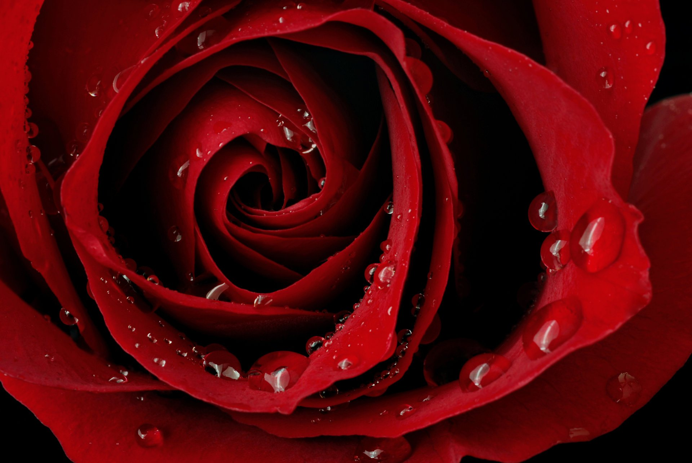

Роза – это красивейший цветок на земле из рода шиповников. Первые розы стали выращивать еще в Древней Греции и в Древнем Риме.
В переводе с греческого языка слово роза означает красный. Такое название получил самый древний вид роз – галльский, цветы которого действительно были красного цвета.
Окрас лепестков роз очень разнообразен в природе. Окрас лепестков роз существует различный: они бывают синие, бывают красные и белые, бывают розовые и желтые. Также можно встретить алого цвета, персикового. Встречаются оранжевые, малиновые, кремовые, сиреневые, зеленые и даже черные цветы в природе.
Существуют некоторые сорта роз, которые во время своего цветения меняют свой окрас. Например, роза сорта “Санмейд” в процессе цветения от желтого цвета становится красной. Розы сорта “Гринсливз” розового цвета за небольшое время превращаются в зеленые.
Шиповник – дикая роза растет на территории Евразии и в Северной Америке. Впервые садовые розы появились в Древней Греции и в Древнем Риме. В Европу эти прекрасные цветы завезли в конце восемнадцатого века.
Розы не только красивы и источают уникальный аромат, но они полезны в медицинских целях. Лепестки роз содержат большое количество полезных для человека элементов – каротин, эфирные масла. Также свежие лепесточки содержат железо, кальций, витамины “В” и “С”. Благодаря наличию этих веществ настой из свежих лепестков роз лечит кожные заболевания, заживляет раны, снимает депрессию и нервные расстройства психики человека.
Главным недостатком большинства этих цветов является наличие шипов. Но это необходимо этому цветку, так как это растение очень красиво и притягивает к себе слишком много внимания. Шипы являются основной защитой от такого интереса со стороны людей и животных.
Пышность роз начинается с 5 лепестков, заканчивается 120. Рост розы от 20 см до 7 метров. Стебли и стволики растения покрыты шипами разных размеров. Но существуют сорта вовсе без шипов.
Еще розы используются в качестве сырья для духов, вина, красящих веществ. Роза ведь не только королева среди цветов, но и среди парфюмерии. Чаще всего используют сорта: Damascena Mill, Rose de Mai, Centifolia. Большим поставщиком Damascena Mill является Болгария. Примерно 45% мужских и 95% женсих духов имеют в составе розовые эфирные масла. Ну и конечно роза это любимый цветок многих. Например, женщинам розы дарят как символ красоты и молодости.
Интересные факты. Самым большим одиночным розовым кустом является Lady Banks в США. Занимаемая площадь равняется футбольному полю. Бутон самой маленькой розы сортов «Си» не больше рисового зернышка. Самая старая роза находиться в Германии. Ей уже 1000 лет.
